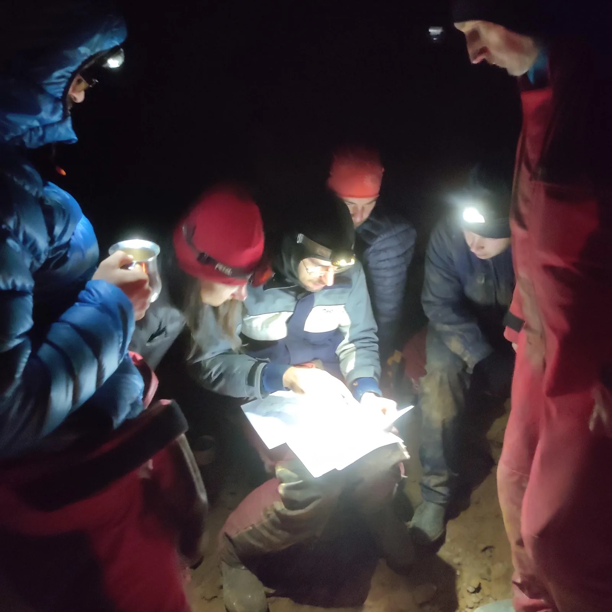

Produženi vikend u JSC- ulaz Kita
Produženi vikend raspoložena ekipa provela je u JSC - istraživajući u Kiti. Što su napravili, koliko su se zablatili, nasmrzavali i što sve još proživjeli - pročitajte Karmeninoj priči i Marininom Dnevniku istraživanja

MOJA DRUGA KITA
Napisala i fotografirala: Karmen Jakovina
A mislila sam da mi je prvi put bilo naporno!
Ali to je tako. Zaključila sam da, daš li sve od sebe, Kita će pomicati tvoje granice.
Oko 19 h Lacko je došao po mene (extra delux prijevoz, skupi te doma i iskrca doma) s Čajkom i Dodom. Vožnja je uz uvijek duhovitog Lacka i Čajka, te filozofa Dodu prošla brzo. Sastali se sa Marinom, Lovelom i Matteom iz Estavele kod Zvonimira, raspodijelili opremu i uputili se do okretaljke. Morali smo uzeti taxi jer Lackov auto nije mogao po makadamu.
Spust je bio ovaj put prilično laganini, za čas smo bili dolje, do (mog naj favourite) Bivka pod Grlićem. Nismo na žalost tu ostali (ili na sreću, kako će se ispostaviti na izlazu), nego smo odmah "HC" (čitaj: hard core) nastavili do Trulog.
Ha-Ce i zato jer je bilo već jako kasno, stigli smo oko 6h u subotu. No svejedno mi je bilo puno lakše nego prvi put, kad sam mislila da ću dušu tim putem ostaviti. Iskusni kažu 'sve je u kilometrima'.
Nakon sveukupno 5 sati došli smo do Trulog.
Sad mi je nekako simpatičniji, kako smo se tu smjestili za konkretno obitavanje. Slijede planovi za istraživanje, klopica i spavanje. Čak mi je bilo i manje neudobno spavati na 2 tanka karimata. Pomalo se navikavam?
Idući dan Dodo i ja, zbog razno raznih okolnosti, nismo išli u istraživanje. Većinu vremena smo proveli u šetnjici do Grlića i natrag, po užad. Bilo mi je drago doći tu opet, jer od moje prve Kite tu imam jako drage uspomene. Usput smo se malo zagledavali u razne upitnike, brbljali i sl. pa je potrajalo, no imali smo vremena.
Radimo plan istraživanja (foto: Karmen Jakovina)
U nedjelju smo svi izašli na teren. Ma odlazak na Mjesec, Mars i dalje, je mala beba! Glonđe, brda, klizavo, blatno, uski pikavi blatni prolazi i tone blata! Jesam li spomenula blato? Ljepljivo, čak i nekako masno. To ti je fina fina glina, kaže seka. Ma fina je... odurna je i kad ti tu noga zaglibi treba ti pol sata da ju izvučeš (ako si ja, a ne Lovel koji valjda lebdi iznad svega).
U timu smo bili Dodo, Čajko i ja. Dodo je postavljao, Čajko mu je pomagao savjetima, a ja... Pa ja sam postala korisna kad smo Čajko i ja čekali Dodu dok se spuštao u neku blatnu i usku kosinu gdje smo se brzo počeli smrzavat, te sam pomogla Čajku da ostane na životu. Grliš se i stiščeš kao da si novopečen par, jer radi se o preživljavanju. Nazvali smo ovaj kanal Mala nužda, pogodite zašto?
Na povratku smo još čekali Marinu i Lacka koji su crtali jučer pređene metre. A bilo ih je podosta, sve skupa tijekom cijelog istraživanja više od 600 m. Ne treba spomenuti da smo se usprkos objedu i vrućem čaju još malo smrznuli. Mislim da me je spasilo moje prakticiranje završavanja svakog tuša ledenom vodom. Uglavnom, nakon toga mi nije bio nikakav problem malo se umiti i oprati i prati boce golim rukama sa Kitinom ledenom vodom.
Mi smo bili u Minđani, gdje su Marina i Lacko pronašli i neku brutalnu vertikalu, dok su Lovel i Mateo bili u Neudatim ženama. Svi potpuno blatni - osim Lovela.
Povratak do bivka je bio pomicanje granica na najjače. Spravice ne grizu jer su zatrpane blatom (upravo onako kao što je opisano u članku "Velebitaši u Mic-po-mic penju" by Marko Rakovac), najužasniji osjećaj. Blato svugdje... Na jednom sidrištu se nikako nisam mogla prekopčati i prebacilo me. U glavi naravno. Prvi put sam ridala u jami. Kao da treba još vode da još više omekša blato!!? Ali ne možeš protiv frustracije samim sobom i uvijek prisutnom brigom u takvim trenucima, 'hoće li me nakon ovog ITKO htjeti opet povesti sa sobom?' Sustigao me Dodo i pomogao mi, iako sam u svojoj sveopćoj muci živčanila na njega, da mi daje nerazumljive upute. Hvala Dodo. Oprosti Dodo.
U ponedjeljak odlučismo Čajko, Dodo i ja ostati u bivku. Svi smo si našli nekog posla (npr. oribati spravice jer iskustvo njihovog "negrizenja" nisam htjela ponavljati pri izlazu van), Dodo i Čajko (najviše Dodo), upgradeali su bivak, tako da je dodan još jedan suhozid kod smočnice, uređen je postojeći dio, malo su povećani elementi blagovaonice... Čajko je i popisivao oružarstvo, a ja kuhinju i radila neki ručak. Prala sam i boce da ipak nekad budu oprane od tog blata. Najčešće je kuhao Dodo i to sve neke bakanalije, restani krumpir na salatu, krastavci salata s vrhnjem, cikla salata s mediteranskim začinima, neke riže i heljde s finim umacima…
Nadograđeni Truli bivak (Karmen Jakovina)
Kad su se ostali vratili i nešto pojeli, spakirali smo stvari i krenuli prema Grliću. Trebalo nam je oko 1h i 20 min. Malo smo pojeli i spavanac.
Iako sam bila puno bolje zabundana nego prošli put, i na Trulom koji je nekih 50 m niže mi je bilo toplo spavati, ovaj put mi je ovdje bilo opet hladno. Ne samo meni, i ostalima. Mislili smo da je vani nevrijeme.
Krivo smo mislili, vani nas je dočekao lijep i sunčan dan! Čudno...
Ustali smo rano, i Dodo, Mateo i ja krenuli prvi van. Trebalo nam je 4h. Malo smo se opet gubili, usprkos meni koja sam već bila. Ovaj put ću definitivno zapamtiti!
I penj van mi je bio lakši od prvog puta, neusporedivo. To se radi o tim kilometrima, kako je Marini jednom rekao Raki.
Svratili smo opet do Zvonimira nešto gricnuti i popričati o tome što je postignuto - osim preko 600 novih m pronađeno je i novih nekoliko upitnika i jedna bijesna vertikala!
Ciao Kita, vidimo se opet.
DNEVNIK ISTRAŽIVANJA
Zapisala: Marina Grandić
Fotografije: Lovel Kukuljan
Sudionici: Domagoj Čajko, Igor Dodolović, Daniel Lacko, Karmen Jakovina, Matteo Zausnig, Lovel Kukuljan, Marina Grandić
Petak 18.6.2020.
U JSC (ulaz Kita Gaćešina) ulazimo oko ponoći, na Truli stižemo oko 5 ujutro.
Subota 19.6.2020.
Budimo se popodne. Odlučujemo svi ići u Minđanus jer je to najbliže bivku, kako bismo se vratili što ranije te djelomično vratili bioritam. Lovel i Matteo istražuju upitnik u ulaznom (ne-blatnom) dijelu koji završava suženjem.
Lacko, Čajko i Marina ulaze u blatni dio. Otkrivaju dodatne upitnike pri samom ulazu u dvoranu i na dnu blatne dvorane. Marina se zavlači u još jedan upitnik - kasnije nazvan Mala nužda, a Lacko (u potrazi za Marinom) ulazi u upitnik s nacrta (koji na kraju nije nacrtan i istražen do kraja u ovoj akciji). U Maloj nuždi Čajko oprema, a Lacko i Marina crtaju. Nastavlja se na više stana - istražujemo i iduća 2 dana. Karmen i Dodo rade transport užadi s Grlića.
Nedjelja 20.6.2020.
Lovel i Matteo penju u Neudatim ženama. Nakon 15m i nekoliko skokića kanal ide dalje u plus. Taj dio nazivaju Karlovy Vary (toplice u Češkoj).
Dodo, Čajko i Karmen opremaju dalje u Maloj nuždi. Kanal završava blatnom kosinom (Toblerone) na kojoj su se svi izmučili suženjem kroz koje struji zrak, tako da je odlučeno da je najpametnije da se drugi dan taj dio samo skicira.
Marina i Lacko idu samo pogledati još jedan upitnik s nacrta. U jednom dijelu Lacko je zapeo u suženju pa je taj kanal nazvan Lackov SUžitak (kanal su idući dan nacrtali Matteo i Marina). Marina i Lacko nastavljaju crtati dio koji je Čajko prethodni dan opremio. Spustivši se niz vertikalu ulaze u dio koji nazivaju Put Malih Čizmica koji u jednom djelu završava ogromnom vertikalom sa snažnom jekom, a na drugom djelu kanalom koji završava i drugim kanalom koji se u jednom djelu spaja sa Malom nuždom, a u drugom sa manjom vertikalom.
Ponedjeljak 21.6.2020.
Lacko i Lovel ponavljaju dio u Putu Malih Čižmica, crtaju Toblerone i istražuju manju vertikalu koji se otvara u kanal s kaskadama i visoki dimnjak s vodenim tokom.
Marina i Matteo crtaju Lackov SUžitak koji na dnu završava ispranom vertikalom od cca 20 m koju je potrebno istražiti. Također pronalaze i treći upitnik - lijepi zasigani kanal u kojem se opet nalazi ogromna vertikala. Za ući u vertikalu potrebno je malo otkopati sediment.
Karmen, Dodo i Čajko izrađuju novi stol na Trulom, peru opremu i popisuju stvari.
Utorak 22.6.2020.
Buđenje na Grliću i izlazak oko 3 sata. Klopa i piva u Fast Foodu i put kući.